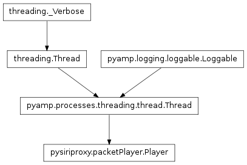
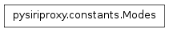

The packetPlayer module
Contains the Player class.
The Player class

-
class pysiriproxy.packetPlayer.Player(protocol, filename, logger)[source]
The Player class loads a file containing data which it proceeds
to send to the given protocol class using the same interface used
to handle connections to the server. This allows us to save incoming
data to the server and replay it for testing purposes.
-
onCycle(i)[source]
Called during each cycle of the thread.
-
onException(e, traceback)[source]
An exception occurred.
- e – The exception
- traceback – The traceback
-
onShutdown()[source]
Called in the event that the thread is shutdown.
The Modes class

-
class pysiriproxy.packetPlayer.Modes
The Modes class contains properties which define different types of
data receiving modes.
-
Line
The Line property indicates the mode in which lines of data is
sent and received.
-
Raw
The Raw property indicates the mode in which raw data is sent
and received.